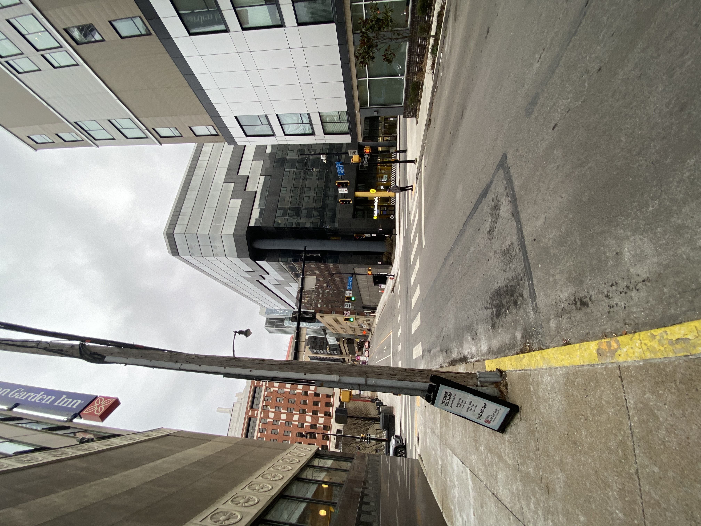
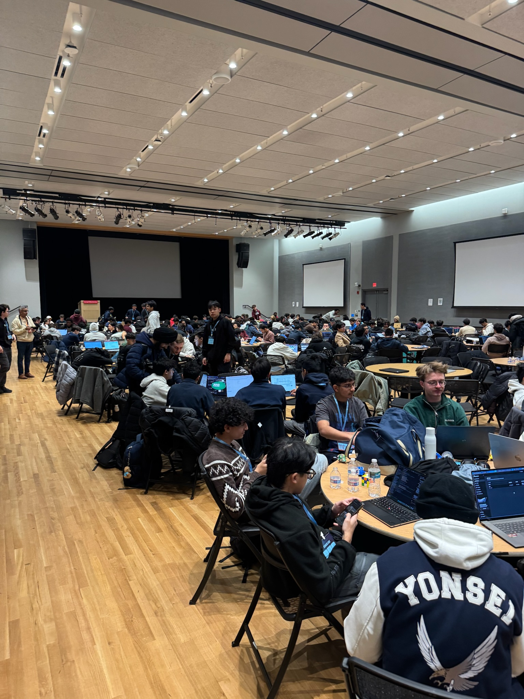
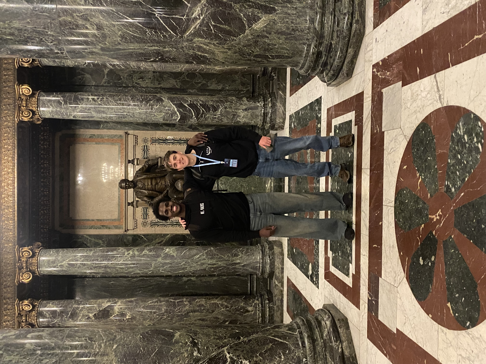
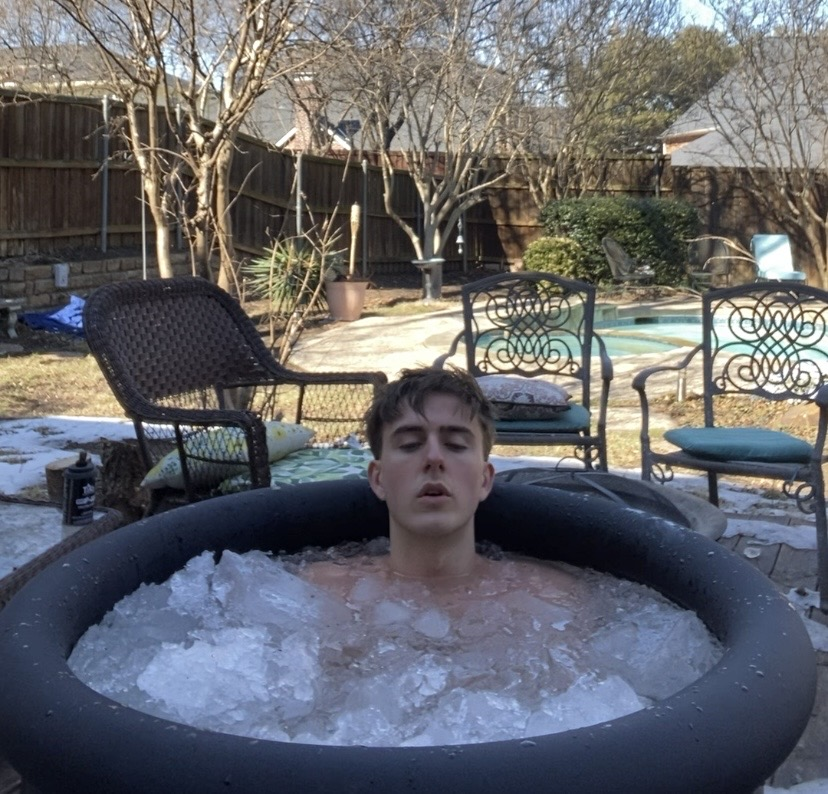
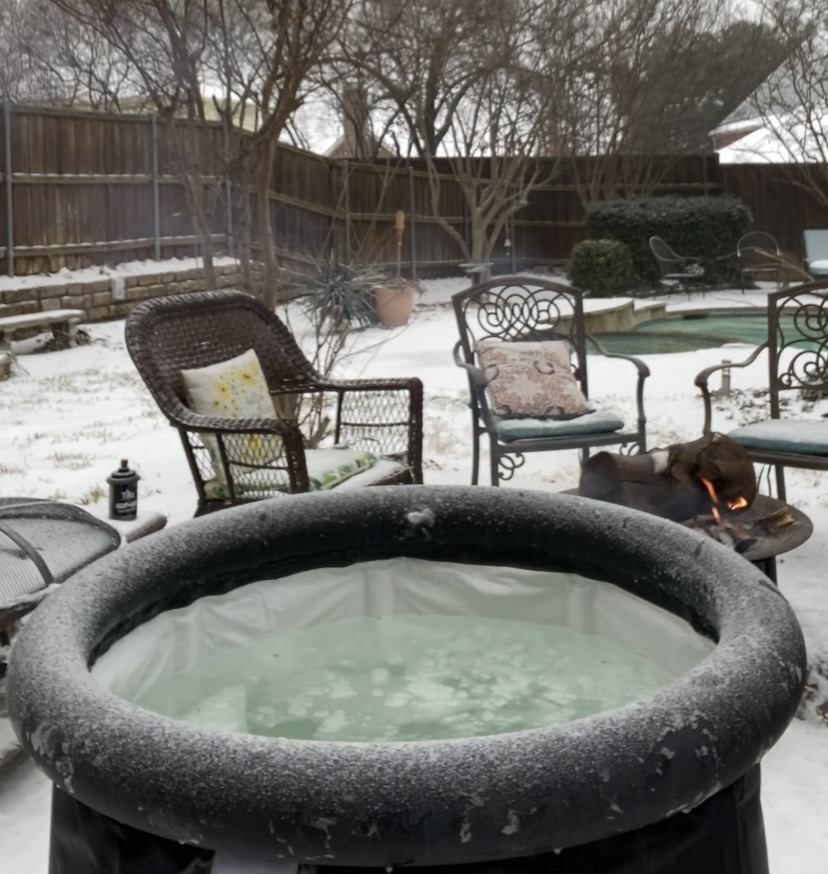
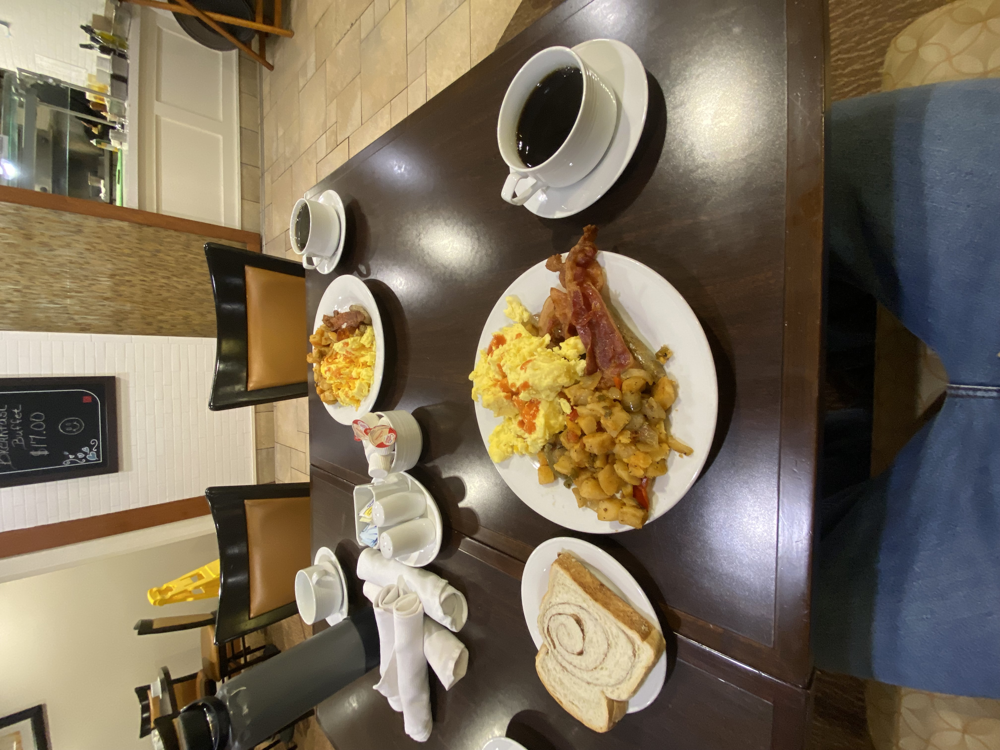
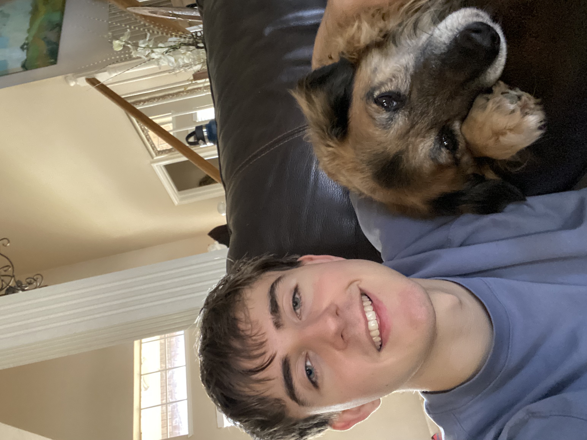

___ ________ ________ ________ ________ ________ ___ ________ _______ ___ ________ ________ ________
|\ \|\ __ \|\ __ \|\ ___ \|\ __ \|\ ___ \ |\ \|\ __ \|\ ___ \ |\ \ |\ ____\|\ __ \|\ ___ \
\ \ \ \ \|\ \ \ \|\ \ \ \_|\ \ \ \|\ \ \ \\ \ \ \ \ \ \ \|\ \ \ \ __/ \ \ \ \ \ \___|\ \ \|\ \ \ \\ \ \
__ \ \ \ \ \\\ \ \ _ _\ \ \ \\ \ \ __ \ \ \\ \ \ __ \ \ \ \ \\\ \ \ _\ _\ \ \ \ \_____ \ \ \\\ \ \ \\ \ \
|\ \\_\ \ \ \\\ \ \ \\ \\ \ \_\\ \ \ \ \ \ \ \\ \ \ |\ \\_\ \ \ \\\ \ \ \/_/\\ \ \____\|____|\ \ \ \\\ \ \ \\ \ \
\ \________\ \_______\ \__\\ _\\ \_______\ \__\ \__\ \__\\ \__\ \ \________\ \_______\ \_______\ \_______\_________\ \_______\ \__\\ \__\
\|________|\|_______|\|__|\|__|\|_______|\|__|\|__|\|__| \|__| \|________|\|_______|\|_______|\|_______|\|_______|\|_______|\|__| \|__|
ABOUT
I'm Jordan
A developer who loves design and working on exotic ideas. I like to think beyond the box and set new patterns. I am immersed in the ai/ml space and like to build innovative yet simple solutions to solve real problems.
Interests
- I love movement. from running to climbing, I want to push myself to achieve extraordinary feats.
- I enjoy exploring all kinds of new topics, along with finding purpose and figuring out how to live freely.
If you'd like to learn more about me, check out my logs.
Feel free to reach out: jordan@jordanjoelson.com
“Why fit in when you were born to stand out?” – Dr. Seuss
-
.
. .
. : :
. * : : . .
. - : : - .
- - . : .
* = = +
# = : + : : . -
= @ - @ + - * : . : . =
. : . : * + ..
.. . : : + = . * * = = + . + . =
. .- . : . . : * * : . . * * - +
: - .: * # * * + = * = * = - * * - : * *
+ * = * * = * * % = # =- * - : . :
= . * * * + = :: # :* .. * % . . : : : .: .
= + * . % - . - . # . *. % .: % % * # . # - : : . + . .
= . % @ : % % * # @ :@. % + % % - # * = . # * + .
* - - . * % + . * = - *: %%. @. @: # :: = =.=. # - % . . % : + *
. = #. # . # # :. .. % +* -@#..@-* *@ +* ** * % . % * = # . = = . = :
- * = + . = # @ .*.* @ -# .@%+ :@%@ .-- ## :% +: * @ % . * % @ : - .. -
+ = + * : % + @ % % .@ @ =# =@%== =@@@+: @+ =@ .@ .@ @ @ - . + - * . . # .
+ # % # - + % % % %: @ +#+@@%%##****%%%@@@@*.@# @* @.@ % * : @ % - : . # :
- = + * -= - @ ::+ : :-.@@@- : : :@@@%@ % @ % *.=. # * # -: - + =
# * . -: % . %. %.@ * @*@@*. -@@%%- = .:+ = -#%@@* .+@@@@ % # @ @ @ @ - @ .:
+: . # .# *: *. @ **@@=# +@%@: * %# * -+@:%@.%- . % +- +. - *:#@@@ % =+ -= % # .# =. :
.% .* @ @: %# @@%* %.: @#%@=@+@@@@@@@@@@@@@@@@@@@@@@@@@%@ @.*#:* . =:+% @ % %. @ * @ +:
*= =# =@. +@@+# #.%.%#%%@@@@@@@@@@@@@@@@@@@@@@@@@@@@@@@@@@@@@@@*@=# .+ * @-.***.=# #= :% : =+
: -* .@* .@# @@+% # %#@=@@@@@@@@@#@@@@@@@@@@@@@@@@@@@@@@@@@@@@@@@@@@@@@%@=% @: @ -%@+@ #% *- *% .+
=*: :#: #%: :@@% + %:@ @+@@@@@@.+ +@@@@@@@@@@@@@@@@@@@@@@@@@@@@@@@@%--*@@@@@@@.@-+%.%.%+#% +%. *@. -#-
.*%: #@*.@#%=-% %@@@@@@@@%.:#* @@-#@@@@@@@@@##@@@@@@+#@@@@@@@@@@@@@ . @=@@@@@@@@#@..#=++@@ =%%. ++.
:#+. =%@%== %#=@#@@@@@@#@@. %@#...#@@@@ #@@ :@@@@@@%.#@@@ .+-=@@@@@@@*@@ :% *@ .#@= -%-
=+=. #= @-.+@#@@@@@@@#+%#- .@@@%%%@@@@ @@. @@ @*%@@@@: : =@@@@@@@+@@.%.+@#@*. -*%*-.
-%@@*: #: -@ @#@@@@@@@@%#=+ @= -%@@@% @@@@@ -@@ *@%%:.-@@ # =@@@@@@@#@@+ *@@%
+# :@.@%@@@@@@@@@@@ =* @@*=:-++@@@@@@@@@@@@@@@#%@@@@@@@%- .+@ #= *#@@@@@@@@.#@-=@- ..:--.
.@ # @@%@@@@@@@@%+ %@@%%@%%@@@@@@@@@@@@@@@@@@@@@@@@. - =+=*%@@@@@@@@@..@@# .:---.
.::..... @# @*=+@@@@@@@*@=@# @@@%*=::-@@@@@@@@@@@@@@@@@@@@@@%%@= @ + -%@@@@@@@-%@@%== ...
.@%.=@.@@@@@@@@@@@ . ** @%%= +@@@@@@@@@@@@@@@@@@@@@@% :*@*. +@ *@.-.@@@@@@@@@@%.:%@
.---. +@@ : @@@@@@@@@@@#.%. :#- =@%. #@*=@@@@@@@@@@@@@@@@@@@@@@%. +@*.#% -.: +%@@@@@@@@%@#.:@# ...:-==:
+@= =:.+@@@@@@-+%:@@@@%#.. @* =@:***#@@@@@@@@@@@@@@@@@@@%.% : @ + : .@@@+.=#@@@@@%-..=@@@#:
.%:..%=* : @@@= . @*@ @=:%%-%@@@@@@@@@@@@@@@%+ .#. @#@: - %@* :-+=@@@*..#@- -+=.
.+%*: #+##+@@=. @:#%.@.# @.%@@@%@@@@*@@-@% @ * @@+ - . .@@-: +@@+ -%@- .*.
-- .@# . -##. @@% =::-=.@%:=@=- +: ++ @ @ - @@. . @* :. %% +:
== *= =# %@@=. %: *. # :@@ @:@.@@ @: % @ % :..%.%.@% @. :.:+ =@: *=
. #* @= +: . :@@@#@@.@ % % .. +. =%@@%. @- @*@# *% * +: .
+. %= *@#+@% - :* . +@@@%- = # . * @=@@% %* . :@% :% ** .* :
: =* = %. #+ % .@. .*@@@@@@@@@- @: % .@--#: % =# ++ *
.* %. ++ %*#@#: @+ .@= #* :@ +#%@ %.#- #. *. +:
* # .# :#.%.:% .@- :@@- -@# .%#. @- *@.%#:+ @ + *. .- .* =.
= + @ . @ = % %@ +-== #@@@: +%@*+-......:-+#%@@@%+. . @@#.#-*.*= @ % - # + - *
- + % := + # @ @ =@ %@%%: .-*@%- .:--=*#%@@%*: *@@@ % % % *.= +. # =. = # = +
.* @ . :. % @ % * .@ @ @-@@@%- .. . .--:. +@@%@@ @ + -:% .. @ @ = = - @ . % .
= -. # # % # .. @ :- % @.*@ @ *@-%@%@@@@@@@@@@@@@@@#:-@@- @..% + = % % : @ = + .= - *
. + - = # @ :.@ @ + #..% @ #+ @ .@ @ @ @ %..# # +@. =% *. @ - # = * - . * * # = =
= + . - + % = + . @ := % @ % -= @ . = # % .@ = - .# .@- @ :: @ . @ # . + . + + = .
- : - : - + .. @ : * * @ @ @ = % = .. * -* * @ @ * # : = % * : + - : +. . - .
+ . = . * : % * @ + - * # : @ . : + =. % # : @ % : : = % : . = # * . .
. . % % * * % = % . : # = = + # - * @ % + + # = = : : +
: = = : % * = # . # # * # - % * - # .- - # # * - @ = # * : *
- = . + % : : : * * . * # : = % : = * # # + % : =
= . : : . =. + % = # + : . . = = = = : - .* . =
: - : . + * : + : . - . .. = . : = .
= * . : + . : * . . * + - : . =
. . - . % + + + . :
= % : = + . - : . : = * #
. . . : + . .
= : . = . = - .
. . : . . . - =
. : .
= -
:
.
Last part of January, spring semester, navigating life, and monthly review.
Status report, first hackathon of the year, n more.
Covering the reason for creating this "logs" section, my pursuits for 2026, and more.
Greetings people,
I have been meaning to start writing entries or "logs" to my portfolio for way too long. I am now finally getting to it after remaking my website for the millionth time.
The intention behind these entries is to help me share about what I am learning, while also sharing it with others to entertain, help, or inspire them. Moreover, I have wanted to further explore writing as it's very soothing and I find myself writing less and less with AI, so you'll have to bear with my grammar.
2026
Now that it is 2026, I'd like to share some things I want to accomplish this year to look back on and hold myself accountable. I remember thinking on New Year's Eve how fast time seems to move, and just like that we are 6 days in already.
I'll break up the goals into 3 categories. 1. Professional & Technical, 2. Movement, and 3. Personal.
Professional & Technical
- Get a job at an epic company
- Become proficient in vim
- Go to 5 hackathons(two planned so far)
- Contribute to an open-source project
- Cool solo project(few ideas in mind)
Movement
- Run a sub 4 hour marathon (running cowtown marathon March 1st(follow me on strava @jordan joelson))
- Half ironman
- Lead climbing certification
- Get clean muscle ups
- be able to hold hand stand
Personal
- Write weekly here
- Work on my tonality
- level up my meal prepping
- breath work daily
I will most likely come back here to add or make some of them more specific.
Conclusion
I plan to write on here weekly, improving the quality of them as I go with visuals and better structure.
Remember to not let moments pass you by, and do it NOW.
"I wish you a good night or a good day - and a good life. All the love all the power" - Wim Hof
Hello again.
I'm a few days behind on writing this, but it worked out well as I have more to share now.
Since last time, I've taken it pretty easy besides the past few days. I've gotten to spend time with friends before they head back to school, played some golf, got a few runs in, cooked a 5-star pasta, coded, and got I accepted into the NASA L'SPACE Program where I will be doing proposal writing which should be cool. I've been consistent for the most part, although, despite my goals in log 1, I'm still not grasping the true purpose behind life as it feels the main piece of the puzzle is missing. Is it just what you make of it? For glory? Divine purpose? Idk. I'd say I have a lot of figuring out to do, but I suppose that is a part of the fun. So maybe it's about learning to be yourself. Besides all that confusion, these past few days were busy because I got to go to my first hackathon for the year!
Hackathon: A short competition where people or teams create projects to solve specific challenges, often supported by sponsor tracks. At the end, judges review the projects and choose winners based on criteria.
NexHacks
The hacakthon I attended this past weekend was Turing City NexHacks at Carnegie Mellon University hosting people from the UK, Canada, Hungary, and all across the US. So I flew out for pittsburgh Friday morning with my friend Toni. The hackathon opening ceremony was only on saturday which left us all of Friday to explore the city and ideate.
Saturday morning rolled around, so we headed to CMU to wait for the opening ceremony. Once we arrived, several sponsors were tabling so we spoke with many of them. At 11:30am the ceremony began, and we got to hear from several successful speakers, along with recieving all information on the different tracks.
Next, we looked for a spot to setup to figure out what we would build. Our brainstroming process ended up going till 5:00pm where we finally felt that we had a decent idea. At 5:00pm we went to a fireside chat that hosted the ceo of trainwell.
After all that, we finally got to coding at about 7:00pm so it was already getting pretty late.
Our idea
We ended up deciding on on an AI pickle ball coach, since one of the sponsors, Overshoot, an SDK(Software Development Kit) allows for AI applications to see the world and act on it in real time.
As we continued to code there were several bugs that hindered our progression leading to us staying up all night and heading back to our hotel at about 7:00am where we continued to work.

At 10:30am we went off in search of a pickle ball course to record our demo. We first went to a park that was supposed to have a court but we never found it. So it seemed easiet to go back to CMU and use there tennis courts instead but there gate was locked... So we had to jump like a 10ft gate to get in and it was about 25F outside.

It was about 12:00pm now and we had to get the demo done by 1:00pm, and of course things start to go wrong. We had some issues with our project related to the network, Toni's computer overheated and wouldn't turn on, and I was having issues with the recording software. However we ended up submitting, although, given a little more time it would have been much better.
Judging came around at about 3:00pm, we showed it to the Overshoot team and general judges.
After that we were worn out and hadn't eaten for 12hrs. We went to get some food as we waited for the closing ceremony to come, we weren't really sure if we had done enough to place but it had been fun.
The closing ceremony came around, and they announced all the sponsor tracks and were coming to a close with the general tracks. The first general track was education which we were apart of, they called 3rd, then 2nd, but they said our name for 2nd? Suprised for a moment, we realized that they did call our name and laughed in surpise.
All in all, it was a really rewarding experience and just the beginning.
Check out our project
Final thoughts
My spring semester has just begun as well, I am going to try to make the most out of it, and continue to find challenges for myself. I might be attending another hackathon this upcoming weekend if there are not issues due to weather. Besides that I will be back soon.
Those who keep on going are always rewarded.
"A fool prays for an easier road, a wise man prays for stronger legs" - Chinese Proverb
Peace
I'm back.
I haven't exactly wrote here weekly like I said I would, but I am quite happy with what i've written in the past two entries. So maybe I won't aim for weekly, but around 3 per month.
Also the idea struck me yesterday of doing a monthly review, so on the first day of the new month, I will write a log to reflect on how it went.
School
School started pretty much right after I got back from NexHacks (check previous log for NexHacks story). I went to all my classes and got a feel for what my schedule will be like. I am also mentoring 2 teams with GDSC (Google Developer Student Club), one focused on machine learning and the other on frontend. Alongside that I met my team for the NASA L'SPACE Program which I am now a part of. So I am starting off the semester pretty hot which seems to be an occuring theme that I need to be careful with...
30 day cold plunge
A few days before the upcoming weekend (24-25th) I had the idea to do a cold plunge daily for 30 days and post it on instagram. I can't exactly remember why the idea came. It could have been from seeing another guy named Jordan on instagram complete 1000 days, or because I knew my ice bath would be icy with the incoming weather. However, I was not set on doing it, the thought of posting it was the main reason behind that, because it's so easy to get in your own head and worry about what others might think or say. Although, when feelings like this come to me, I usually feel obligated to do whatever it is I am hestitant on, which kept me considering it more and more. That upcoming weekend I was supposed to go to TAMUhack (A&M's hackathon) for my second hackathon of the year, but the storm did not let that happen. This was a big part of what made me start the challenge because I wasn't sure beforehand when I'd actually start, and this brought the perfect oppurtunity. I finally told myself I would, and now I am 9 days in. This might seem trivial, but it felt like a big step into helping me be me.
Find me on instagram @jordanjoelson to check it out.
 Reflection of the month
Overall, it has been a great month with many improvements. With that being said, there were also areas that need work.
Areas to improve upon
- Adding stucture to my days.
- Staying consistent with working out even when all the additional commitments come.
- Waking up early (tied in with structure but need to get this dialed in and is one of my biggest goals).
Highlights of the month
- Winning at NexHacks
- Starting the 30 day cold plunge challenge
- Working on readez a speed reading app (will share more on it later)
While those are the bigger moments, the small moments that make up most of our time are what truly shape us. So I am glad that I have been making better decisions and choosing pain over comfort.
Breakfast before NexHacks begun + me and my dog Daisy
 Conclusion
I am looking forward to working on the different areas I mentioned, and seeing what the future has in store.
You need to go after the things you want in life, if you ever hope to achieve them.
"Ships that wait for the perfect winds never sail."
Until next time

GALLERY
Also pending
Nothing to see here
Ta-dah